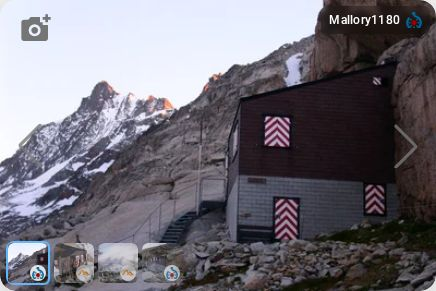

Aarbiwak
▲ 2731 m ☀ Sonne, 10° Vispertal, Wallis
SAC-Hütte
17 Plätze
Winterraum
Das Aarbiwak steht auf dem Grat zwischen Vispertal und Mattertal und ist ein beliebtes Ziel für Ski- und Schneeschuhtouren. Der einfache Winterraum bietet Platz für 17 Personen und ist ganzjährig offen. Wasserstelle und Holzofen sind vorhanden, Verpflegung mitbringen. Der Aufstieg ab Visperterminen dauert rund vier Stunden; im Winter sind Verhältnisse entscheidend.
Verfügbarkeit Stand: vor 2 Std · sac-cas.ch
FR2614 frei
SA276 frei
SO2811 frei
MO293 frei
DI30–zu
MI1–zu
DO214 frei
Frei ohne Gewähr · Mitgliederpreise im externen Booking sichtbar.
Wetter open-meteo.com
FR10° 4°
SA8° 3°
SO6° 2°
MO9° 5°
Buchen
SAC-CAS Booking
ab CHF 45
Heute 14 Betten frei · Mitgliederrabatt
Externe Buchung öffnenwodo.re verlässt · Buchung und Zahlung bei sac-cas.ch
Direkt kontaktieren
Warteliste oder Anfrage an den Hüttenwart
Nachricht schreiben